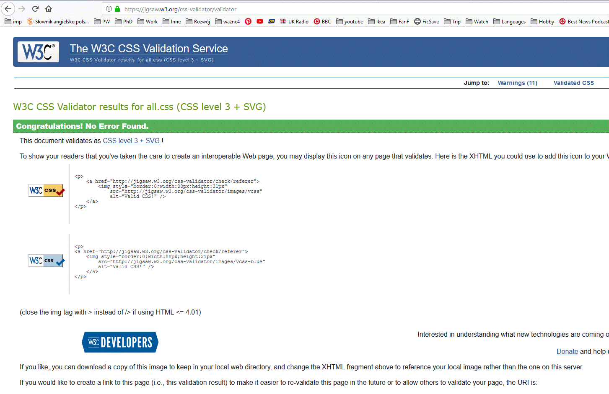
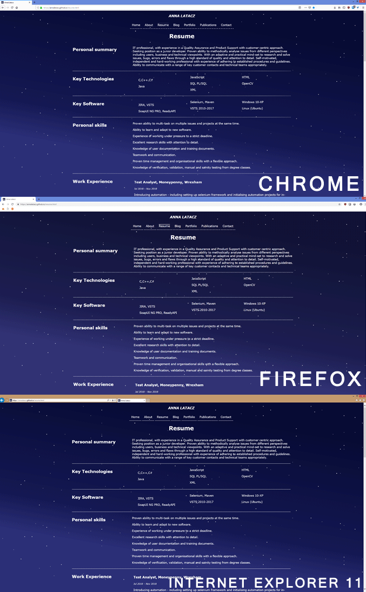
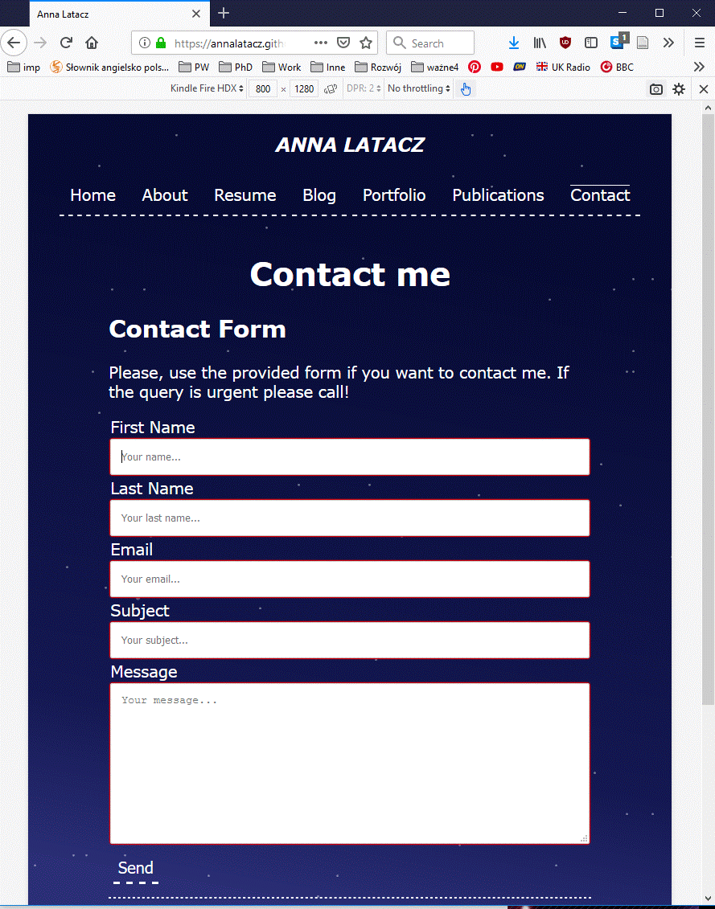
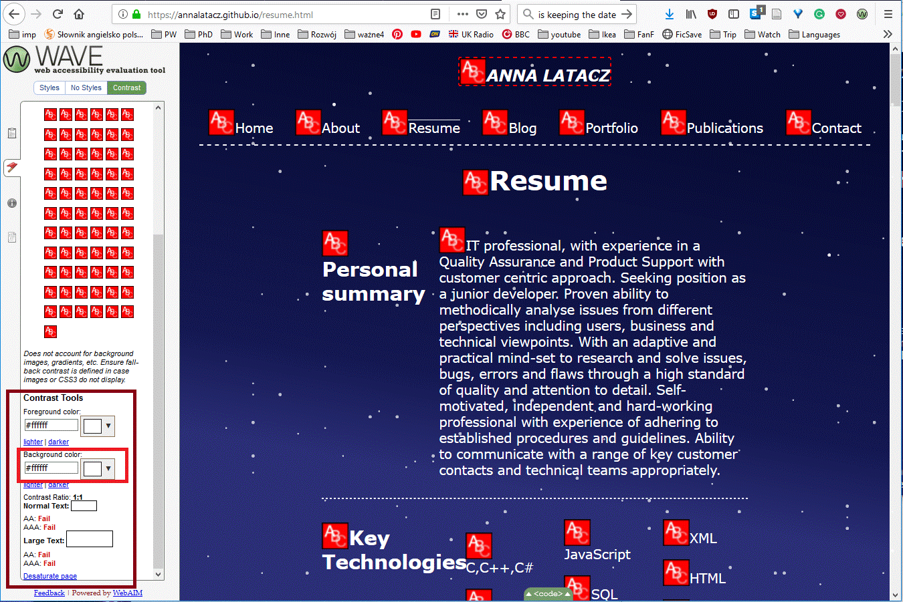
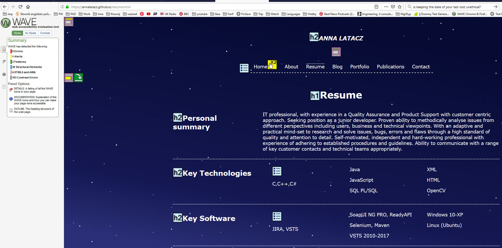
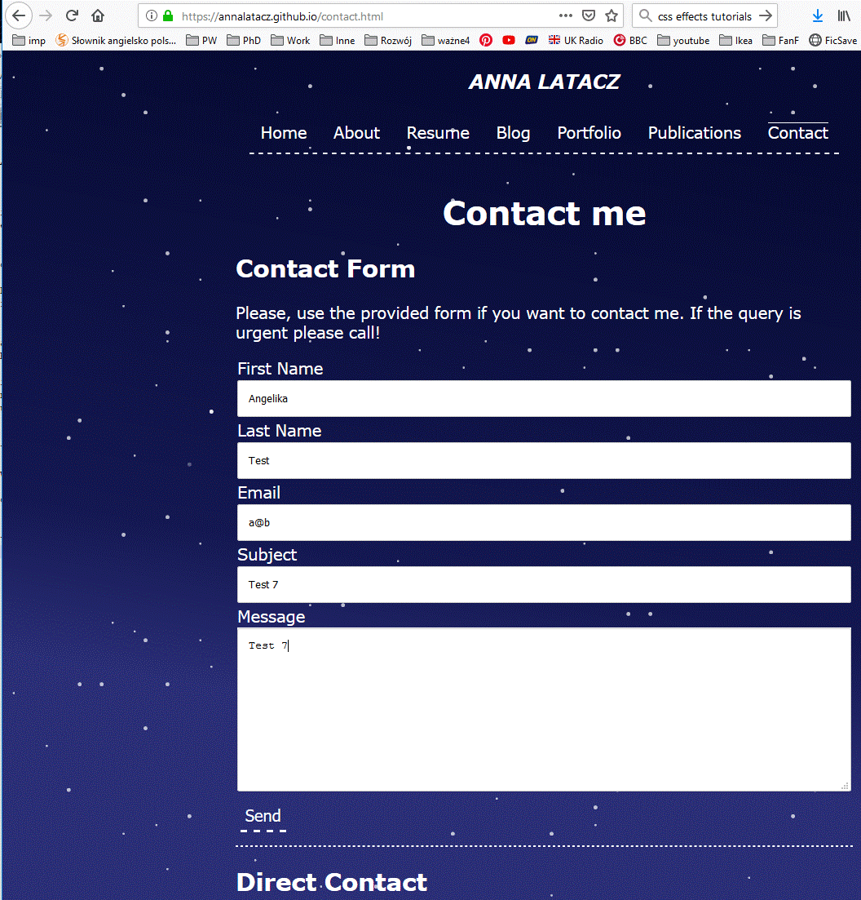
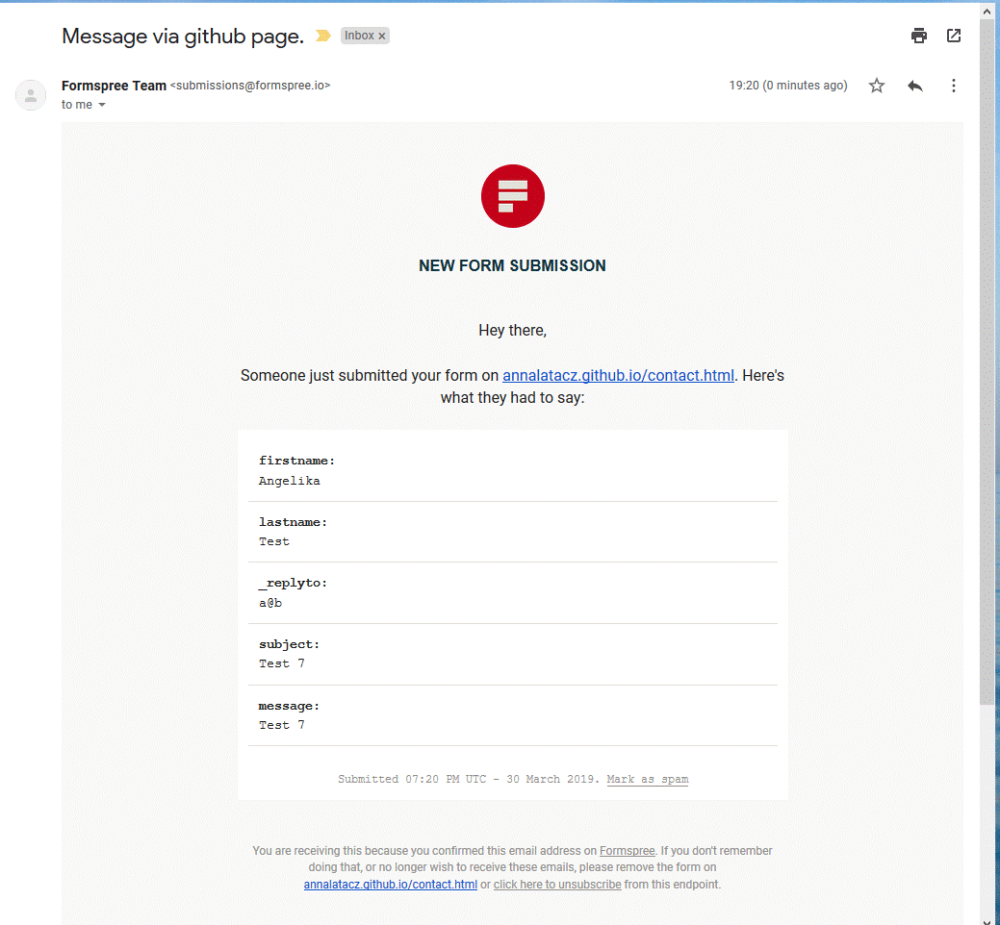

For my MSc module assignment, I decided to use the opportunity of a project based assignment to create a professional website to showcase my CV and portfolio of projects and publications. I decided to use this assignment for my own personal/professional purpose. With the proposal being quite broad, I decided to focus on a static design workflow to ensure the most optimised loading times, customisation of design, cross browser compatibility and the focus on accessibility. With the workflow, I decided to go with GitHub Pages. GitHub is a platform on which developers can store their projects that allows for auditable and agile version control and publication of the contents.
Technologies used
The requirement was to utilise HTML, CSS and a third technology to create the website.
HTML
The website has been written in HTML 5 as it is the latest version of the markup language. For more information about it: HTML 5.2 .
To ensure the website meets the HTML norms, I have written the HTML to the industry standard and the source files have been validated using W3C HTML Markup Validation Service.
CSS
The site uses CSS 3. For the purpose of simplification of the verification of the css files I put all the formatting into one file called all.css located in the CSS folder. The file is divided into sections as every sub-page have its own formatting when required. Some elements e.g. headers are referenced in several sections as their style is dependent on that specific sub-page requirements.
CSS is used for:
General styling of the website (fonts, indents etc.).
Ensuring website is mobile and small screen friendly and responsive.
Providing printing format (with exclusion of unnecessary elements like navigation bar).
Background simulating night sky with stars. It required creative use of the gradient background and box-shadow attribute. Originally, inspired by particle generators, the stars were meant to be moving but user testing illustrated that in some users the movement of the background caused queasiness.
I did look at using an extension languages e.g. SASS but came to the conclusion that there could be issues with some web browsers and decided against this route instead focusing on CSS, which would in turn, keep to my original workflow concept of cross-browser compatibility.
To note for the use of Icons on the main webpage, I decided to use an external CSS reference to the open source project Font Awesome Using these font icons would allow the use of icons instead of pictures which would again add to the load time of the page. These are used for the LinkedIn/Pinterest/Dropbox/Amazon icons on the main page.
To ensure the website meets CSS standards, I have written the CSS in line with the industry standard and the source file has beenvalidated using W3C CSS Validation Service.

Screenshoots of the CSS style positive test results.
Client-side scripts using JavaScript
JavaScript is a general purpose scripting language that is supported by most web browsers. It provides versatile tool to create various effects and enhancements to the website. For the purpose of this project, it was used to create a cookie and cookie banner effects.
Cookies are used for the storing of data. They can include storage of session details, login details, and even shopping cart data. Given, that this website does not require such storage only a very simple cookie has been created that stores the date of the last
visit to the webpage made from that specific device.
The idea behind it, was to create a more personalised greeting for the users with everyone who had not visited the site in the last 6 months would be considered a new visitor.
To showcase the use of a third technology, Javascript was used to create a cookie that would be valid for 3 minutes and then will be only limited to the About page due to possible concerns this may cause for the users. The idea was to create a personal greeting based on if
the visitor is new or a returning one. For further development of the site I believe this cookie will be disabled to ensure less intrusion on the website.
The site had been tested on most of the popular web browsers such as:
Mozilla Firefox 66.0.1
Chrome 73.0.3683.86
Internet Explorer 11
Microsoft Edge 42

Screenshoots of the website in different web browsers.
On top of that, it had been tested using Responsive Design Mode provided by Mozilla Firefox to simulate different devices such as:
Kindle Fire Fx
Samsung S9
iPhone 6/7/8

Screenshoot of the website on simulated Kindle Fire Fx.
Live mobile testing had also been performed on:
Samsung internet 8.2.01.2 (Mobile browser on Samsung Galaxy S6 – my personal phone).
Accessibility
The website has been designed with taking into consideration Web Content Accessibility Guidelines (WCAG). Things that had been taken into account:
High contrasting colours for links and text (used Contrast Checker) and all foreground/background ratios are over 11 (which is higher than recommend ratio of 4.5:1).
Non-colour indications of the position on the site using cursor, or changes made to the button or link when user hovers or clicks on them such as underlining the element or adding a border.
Appropriate use of sections, articles and headers for ease of use screen readers (site had been tested with ChromeVox on Chromebook).
Skip links throughout the site for the main navigation bar content.
Use of headers on the top of each page to indicating where the user is.
Appropriately sized fonts and easy to read spacing. To not confuse reading software there is no text justification performed on the text.
Overall readability of the page is good based on the results of the user testing. (Details about age and profession of each tester are available upon request. The consent from each tester had been obtained.)
Live testing of the site had been done using WAVE. Unfortunately, due to the CSS formatting used to create stars the tool has issues with picking up the background colours from the website. The contrast error is being returned for every text area on the page.

Screenshoot of the website with WAVE contrast test results next to it.

Screenshoot of the website with WAVE style test results next to it.
Navigation
Given the size of the menu and that the site should be responsive and mobile friendly the main navigation is realised in the form of a horizontal (flexible) bar at the top of the page. This ensures that on each page the navigation menu will be displayed in the exact same place and will result in more space being available for the content on smaller screens.
The main navigation consists only of the web page main sections such as portfolio, contact or introduction/home page. As each section contain more specialised content, when necessary, internal navigation system had been provided. For example, portfolio main navigation links are redirecting a user to the sub-pages containing further links directing user to articles about specific positions. Its purpose is to provide more content space for additional information about each position e.g. whether project had been done for purpose of passing a course at university, had been based on personal interest, or maybe a date or technology it utilised. This allows the users to quickly browse though the available content to locate what is most relevant for them.
The minimalistic design of the page is reflected in the navigation to help create a less cluttered user experience.
Contact Form
To ensure contact form is working without the set up of a mail service/server, contact form is using a Formspree. It is a free service that forwards whatever is in the form to specified email address. The email received for my form looks like this:

Screenshoot of the filled in contact form on the website.

Screenshoot of the email with the information from the contact form.
To ensure that only appropriate data is sent via the contact form, client side validation has been used to help prevent spam. The validation includes requiring form specific answers such as email address needing an @ in the form field.
x
This website is using cookies to store the date of your last visit so that you can be greeted with a nice welcome. The information is stored for 3 minutes only. No other information is stored. If you want to disable cookies you need to change your web browser settings. That's Fine